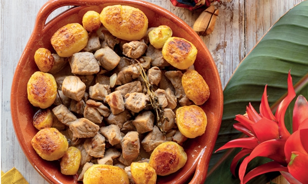

Carne em Vinha D'Alho

Description
Carne em Vinha D'Alho is a traditional Portuguese dish that is made with pork marinated in a mixture of wine, garlic, and spices.
Ingredients
- 1 ½ cups red wine vinegar
- ¾ cup red wine
- 7 cloves garlic, crushed
- 3 bay leaves
- 8 whole cloves, or to taste
- 2 tablespoons ground black pepper
- 2 teaspoons salt
- ½ teaspoon dried thyme
- 1 (3 pound) boneless pork shoulder, cut into 1-inch cubes
- 2 tablespoons vegetable oil
Steps
- In a large bowl, combine the red wine vinegar, red wine, garlic, bay leaves, cloves, black pepper, salt, and thyme. Add the pork and toss to coat. Cover and refrigerate for at least 4 hours, or overnight.
- Heat the vegetable oil in a large pot over medium-high heat. Remove the pork from the marinade and reserve the marinade. Add the pork to the pot and cook until browned on all sides, about 10 minutes.
- Add the reserved marinade to the pot and bring to a boil. Reduce the heat to low and simmer, covered, until the pork is tender, about 2 hours.
- Remove the bay leaves and cloves before serving.
Home